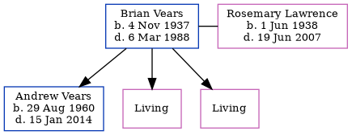

Brian Edward Walne Vears 1937 - 1988
[ Home ] | [ Calendar ] | [ Surnames Index ] | [ Errors ] | [ Family History ]Brian Vears, the husband of Rosemary Irene Peggy Lawrence (the first cousin once-removed on the mother's side of Nigel Horne), was born in Dagenham, London, England on 4 Nov 19371,2,3 and married Rosemary (with whom he had 3 children: Andrew Philip, Wendy S and Yvonne Rosemary, along with 2 surviving children) in Dover, Kent, England around May 19594. On 29 Sept 1939, he was living at 111 Boyne Road, Dagenham, Essex, England1.
He died on 6 Mar 1988 in Deal, Kent, England3.
Children
- Andrew Philip was born on 29 Aug 1960
Citations
- 1939 Register - Findmypast (was recorded at this address)
- England & Wales births 1837-2006 - Findmypast
- England & Wales deaths 1837-2007 - Findmypast
- England & Wales Marriages 1837-2005 - Findmypast
Media
England & Wales births 1837-2006 - BMD/B/1937/4/AZ/001137/041
England & Wales marriages 1837-2005 - BMD/M/1959/2/AZ/001093/001
England & Wales deaths 1837-2007 - BMD/D/1988/3/77032291
1939 Register - TNA-R39-1082-1082E-012-19
Family Tree
Map
Generated by ged2site. Last updated on Jul 3, 2024